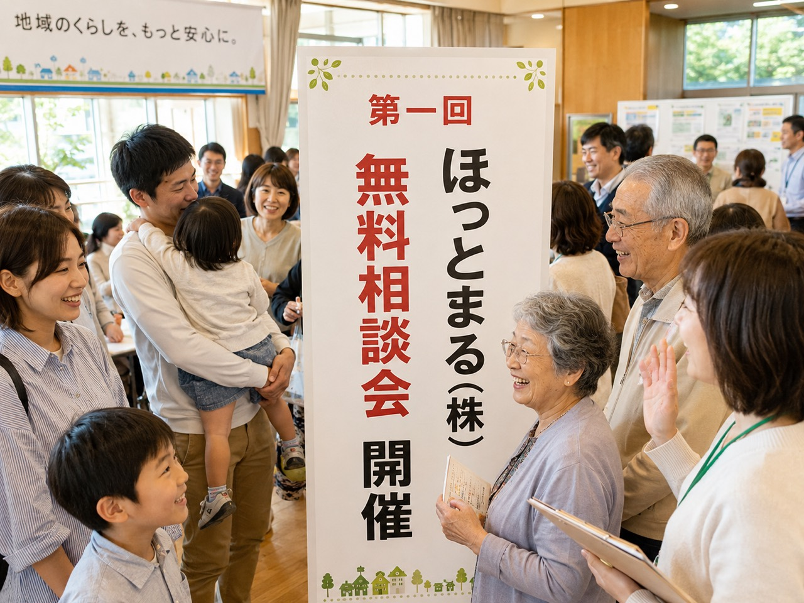
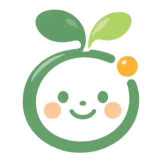

次回の無料相談会
第一回ほっとまる（株）無料相談会
相続のこと。
まず話してみませんか？

相続、遺言、実家、家族のこと。
「誰に相談すればいいか分からない」
という段階でも大丈夫です。
当日は、弁護士・税理士・相続診断士など、各分野の専門家と連携しながらお話を伺う相談会を想定しています。
ほっとまるがまず状況を整理し、必要に応じて適切な相談先へつなぎます。
※発表用サンプルです。開催内容は未確定です。
ひとつの悩みだけじゃないから、
誰に相談すればいいか分からない。
そんなときに、
まず話せる場所が「ほっとまる」です。
話を聞いて悩みを整理し、
必要に応じて専門家や事業者へつなぎます。
文章がまとまっていなくても大丈夫です。
お電話に出られない場合は、確認後こちらから折り返しいたします。
電話番号準備中
これからの活動イメージ
開催情報の詳細は、それぞれのページでご確認いただけます。
次回の無料相談会
相続のこと。
まず話してみませんか？

相続、遺言、実家、家族のこと。
「誰に相談すればいいか分からない」
という段階でも大丈夫です。
当日は、弁護士・税理士・相続診断士など、各分野の専門家と連携しながらお話を伺う相談会を想定しています。
ほっとまるがまず状況を整理し、必要に応じて適切な相談先へつなぎます。
※発表用サンプルです。開催内容は未確定です。
次回のセミナー
そのままでは、もったいない！
「知らなかった」で
払いすぎていませんか？
知識と経験は、
無駄になることはありません。
これからの賃貸経営を考えるきっかけとして、お気軽にご参加ください。
※発表用サンプルです。開催内容は未確定です。
安心してお話しいただくために
何かを売ることや、
特定のサービスへの依頼を前提にした相談窓口ではありません。
不動産の売却や契約ありきで、
話を進めることはしません。
まずお話を聞いて、
何に困っているのかを整理します。
一つの方向に決めつけず、
考えられる選択肢を整理します。
専門的な判断や手続きが必要な場合は、
必要に応じて専門家や事業者へ橋渡しします。
最終的にどの道を選ぶかは、
ご本人の意思を大切にします。
何かを売るための相談窓口ではありません。
まず、
「今、何に困っているのか」
から一緒に整理します。
ご相談ジャンル
「これ、誰に聞けばいいんだろう？」からご相談ください。
ここにないお悩みでも大丈夫です。
どの項目に当てはまるのか分からなくても構いません。
「こんなこと、どこに相談すればいいんだろう？」
ということこそ、まずはほっとまるへ。
まずは、ここから
子どもたちの兄弟仲が悪く、
自分が亡くなった後に遺産分割で揉めるのが目に見えています。
今のうちに何をしておけばいいのか、
全く分かりません。
まず一緒に整理します
親が高齢になってきました。
認知症になってからでは遅い気がしますが、
実家や預金について何を話し合っておけばいいのか分かりません。
まず一緒に整理します
夫婦関係はかなり悪いのですが、
離婚するかどうかまでは決めていません。
家、お金、子どものこともあり、
まず頭の中を整理したいです。
まず一緒に整理します
借金の返済が苦しくなっています。
自己破産しかないのか、
家を売るなど別の方法があるのか、
自分では判断できません。
まず一緒に整理します
自分が亡くなった後、
家族に迷惑をかけたくありません。
遺言、家、預金、葬儀など、
何から準備すればいいのか分かりません。
まず一緒に整理します
会社を息子に継がせたい気持ちはありますが、
本人が本当に継ぎたいのか分かりません。
売却や廃業も含めて、
選択肢を整理したいです。
まず一緒に整理します
自分が急に倒れたら会社が止まってしまいます。
株式、会社のお金、取引先、家族への引き継ぎなど、
何を準備すればいいのか分かりません。
まず一緒に整理します
困っていることはあるのですが、
弁護士なのか税理士なのか行政書士なのか、
不動産会社なのかすら分かりません。
まず誰かに話を聞いてもらって整理したいです。
まず一緒に整理します
文章がまとまっていなくても大丈夫です。
専門家・パートナー
法律、税金、相続、登記、住まい、事業など、内容に応じて専門家・事業者と連携します。
※ほっとまる自身が専門業務を行うという意味ではありません。
関わる人たち
掲載のご承諾をいただいた専門家・パートナーから、顔写真や専門分野だけでなく、人柄やほっとまるに関わる理由もご紹介していきます。
専門家・パートナーのご紹介は準備中です。
実在確認と掲載許可が整った方から、順次掲載します。
離婚、相続トラブル、契約、債務など、法律上の判断が必要となる問題を担当します。
相続税、確定申告、税務など、税金に関する専門的な判断を担当します。
不動産登記や相続登記など、登記に関する専門業務を担当します。
遺言書や各種書類・手続きなど、行政書士が扱う分野について対応します。
相続に関する悩みを整理し、必要な専門分野を考えるお手伝いをします。
不動産の売却、活用、空き家、リフォーム、残置物など、住まいに関する問題を担当します。
ほっとまるとは
問題を直接解決する会社ではありません。
「まず誰に相談すればいいか」を一緒に整理する会社です。
まだ話がまとまっていなくても大丈夫です。
何に困っているのか、どんな選択肢がありそうなのかを整理します。
必要に応じて、専門家や事業者への橋渡しをします。
ご相談の流れ
専門的な対応が必要な場合には、状況に応じて専門家や事業者へ橋渡しします。
1. 話す
LINE・電話などからご相談ください。
2. 整理する
お話を聞きながら、現在の状況やお困りごとを一緒に整理します。
3. 必要な相談先へ
専門的な対応が必要な場合は、専門家や事業者へ橋渡しします。
相談したからといって、何かを無理に契約していただくことはありません。
地域で育てていく取り組み
話を聞くだけで終わらない。
人と人がつながる場所を、少しずつ増やしています。
まず、話してみる場所。
「こんなこと相談していいのかな？」
という段階でも大丈夫です。
家族・相続・暮らしなどの悩みを、まず一緒に整理する無料相談会を地域で開催します。
次回の無料相談会を見る知ることから、始める場所。
相続、遺言、税金、暮らし、会社など、身近だけれど分かりにくいテーマを、専門家と一緒に分かりやすくお伝えします。
セミナー情報を見る一緒に、相談できる場所をつくる。
無料相談会やセミナーの受付、会場準備、ご案内など、ほっとまるの活動を一緒に支えてくださる方を募集しています。
協力隊について見る相談事例
掲載許可をいただいた実際の相談事例から、相談前の困りごと、ほっとまるで整理したこと、必要に応じた橋渡し、その後の方向性をご紹介していきます。
よくあるご質問
ほっとまるへの最初のご相談・内容整理は無料です。
専門家や事業者へ正式に相談・依頼する場合など、費用が発生する場合には事前にご案内します。
はい。
「何が問題なのか自分でもよく分からない」というところからお話しいただいて大丈夫です。
いいえ。
ご相談いただいたことを理由に、サービスや契約を無理におすすめすることはありません。
ご相談内容に応じて、必要となる専門分野を整理します。
専門的な対応が必要な場合には、状況に応じた専門家や事業者への橋渡しを行います。
はい。
まずはLINEから気軽にお話しください。
必要に応じて、お電話などで詳しくお話を伺う方法をご案内します。